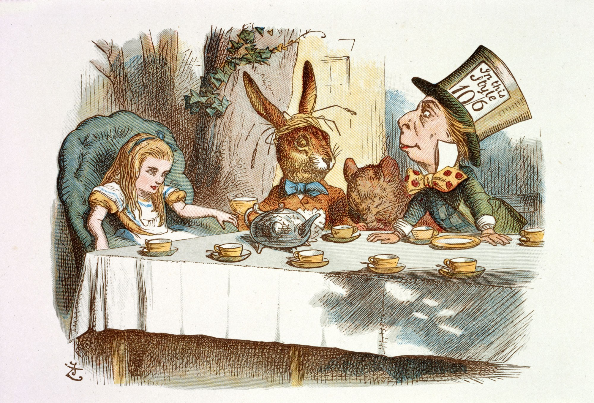

A Macabra história de Alice
A verdadeira história de Alice no País das Maravilhas é bem macabra,pois Alice era esquizofrênica e vivia em um sanatório porque naquela época era uma vergonha para os pais ter uma filha com retardo mental na família. Alice tinha apenas 11 anos de idade quando foi internada...
Para continuar será necessário ir para a próxima página. Antes, gostaria de alertar que o conteúdo da próxima pagina causa repulsa e pode alterar com a condição do seu psicológico. Mesmo assim gostaria de continuar????